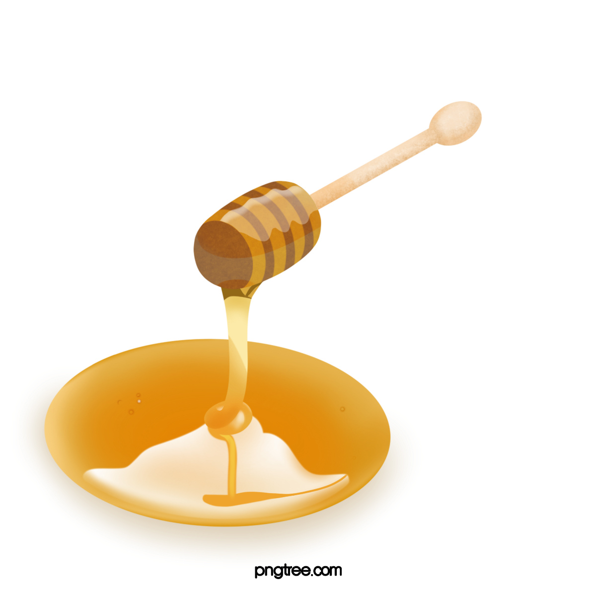
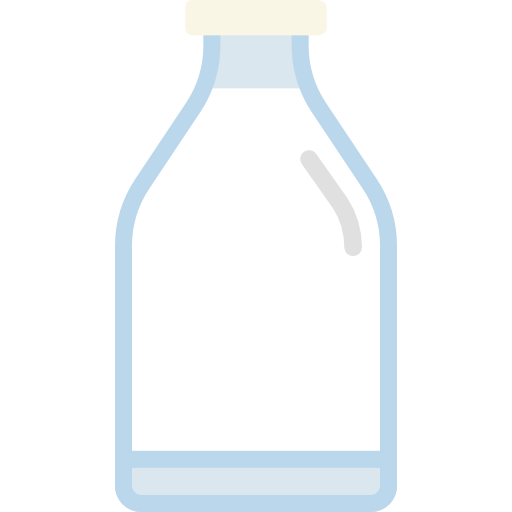

Gaya Hidup
Pola hidup sehat adalah kunci untuk mencapai kualitas hidup yang lebih baik, menjaga energi tubuh, dan mencegah berkembangnya berbagai penyakit kronis.
Dengan menerapkan kebiasaan makan makanan sehat, melakukan aktivitas fisik secara teratur, menerapkan manajemen stres yang efektif, dan mendapatkan tidur
yang berkualitas, maka kesejahteraan hidup dalam jangka panjang dapat tercipta.
Namun, memulai pola hidup sehat bukan hal yang mudah bagi beberapa orang. Lantas bagaimana cara menerapkan pola hidup sehat? Mari simak langkah-langkah berikut ini.
Rutin Olahraga
Tips memulai pola hidup sehat yang pertama adalah rajin berolahraga. Jangan khawatir, Anda tidak harus selalu melakukan olahraga berat seperti jogging dan gym. Cobalah memulai dengan olahraga ringan
atau yang paling disukai, misalnya berenang dan jalan kaki.
Istirahat yang Cukup
Memastikan bahwa tubuh memiliki waktu istirahat yang cukup dapat membantu mewujudkan tubuh dan pikiran yang sehat. Karenanya, usahakan Anda tidur setidaknya 7–9 jam per hari setiap malam dengan
waktu tidur dan bangun tidur di jam yang sama.
Mengkonsumsi Makanan Sehat
Jika ingin mencapai hidup sehat, maka penting untuk mengonsumsi makanan sehat, seperti sayur
dan buah-buahan. Lalu, cobalah untuk memasak makanan sendiri di rumah untuk menjaga kebersihan serta kesehatan makanan yang dikonsumsi.
Apabila sebelumnya memiliki pola makan yang tidak sehat atau masalah berat badan, cobalah mencatat makanan yang dikonsumsi setiap harinya. Upaya ini dapat
membantu mengontrol keinginan untuk makan dengan porsi berlebih, sehingga kesehatan tubuh dapat lebih terjaga.
Katalog Produk
Dibawah ini merupakan produk-produk herbal yang 100% original, 100% alami, Halal, dan Berkhasiat
Madu

Menurut penelitian para ahli, madu memiliki berbagai kandungan banyak mineral dan mengandng tujuh vitamin B kompleks dan didalammya terdapat kandungan vitamin C. Madu sudah dikenal sejak ribuan tahun yang lalu. Banyak orang yang mengetahui khasiatnya. Madu mengandung gula dan nilai gizi yang tinggi. Selain gula, komponen lainnya juga terkandung di dalam madu. Seperti, mineral, polifenol, vitamin, asam amino, karotenoid, enzim, asam organik, dan senyawa yang mudah menguap.
Minyak Zaitun

Minyak zaitun telah terbukti dapat menurunkan tekanan darah bagi mereka yang mengonsumsinya secara teratur. Hal itu dikarenakan kandungan utama minyak zaitun adalah asam lemak sebanyak 98 persen, yaitu asam oleat.
Ini adalah lemak yang termasuk monounsaturated fatty acid, yakni asam lemak tidak jenuh.
Selain itu, Minyak Zaitun juga dapat menurunkan kerusakan oksidatif. Studi terdahulu terhadap pria sehat dan wanita pascamenopause menemukan menurunnya kerusakan oksidatif pada inti sel setelah mengonsumsi minyak zaitun.
Diduga, kondisi itu terjadi akibat efek antioksidan senyawa golongan fenol minyak zaitun.
Susu Kambing

Susu kambing diketahui memiliki manfaat yang potensial dalam menjaga serta menguatkan tulang dan gigi. Hal ini terjadi karena susu kambing mengandung kalsium yang cukup banyak.
Selain itu, Susu kambing diketahui mengandung asam lemak tak jenuh tunggal maupun ganda, serta trigliserida rantai sedang (MCT) yang cukup potensial daripada susu sapi. Berkat kandungan tersebut,
manfaat susu kambing lainnya adalah dapat membantu mencegah penyakit kardiovaskular, seperti aterosklerosis, serangan jantung, stroke, dan penyakit jantung koroner.